CHAPTER 14
Seven Against Iron
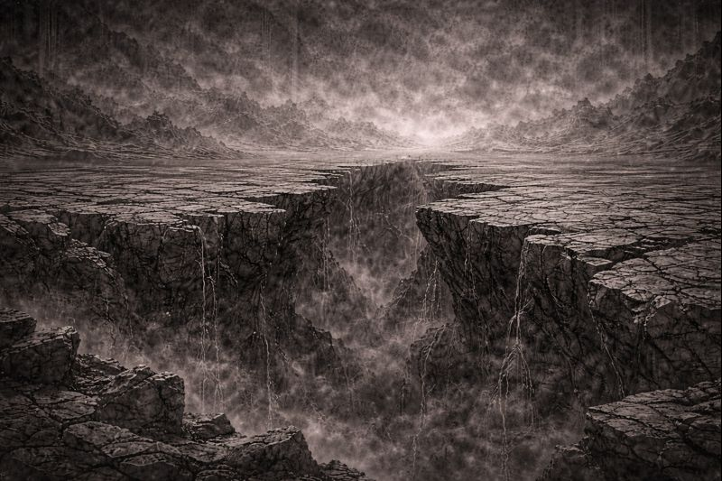
The fracture did not widen.
It did not heal.
It remained—
a boundary drawn by choice,
not by force.
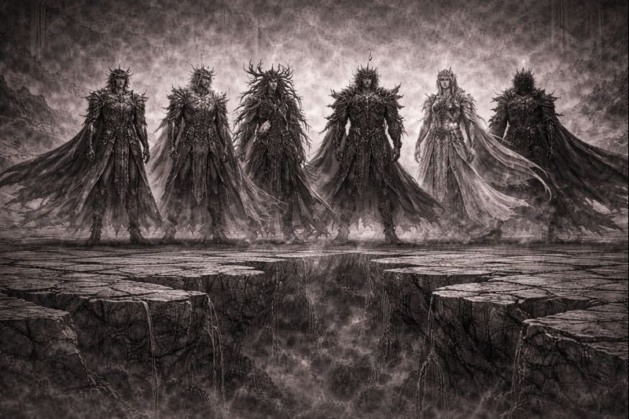
No command was spoken.
Yet one by one,
the Sovereigns aligned their steps.
Not as rulers—
but as those who refused to stand alone.
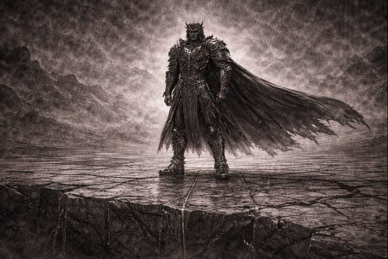
Ferron did not raise his weapon.
He did not brace.
He stood—
as iron always had.
Waiting for impact.
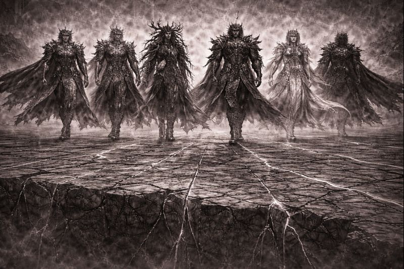
The Seven moved together.
The Nexus resisted—not violently,
but deliberately.
As if order itself questioned their intent.
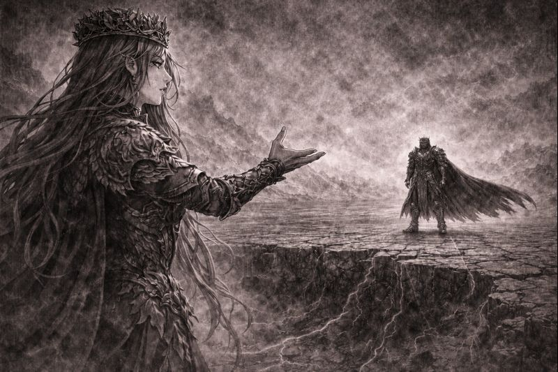
“You are building a world that cannot breathe,” Verdani said.
“Life survives through failure.”
“Through imbalance.”
“Through change.”
“What you call protection—
will become suffocation.”
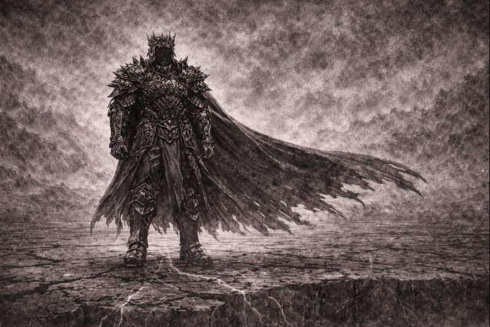
Ferron’s voice was steady.
“Chaos does not teach,” he said.
“It consumes.”
“It repeats.”
“I will not allow the world to relearn collapse.”
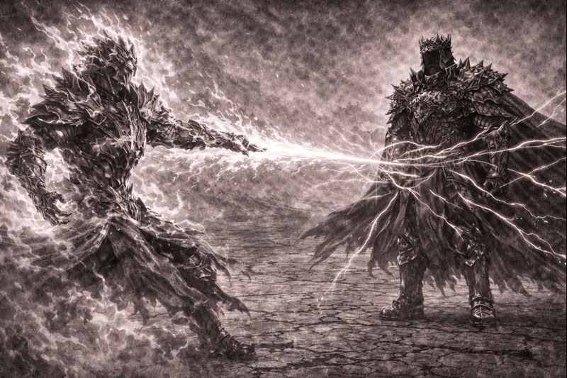
Power moved first.
Not in fury.
Not in hatred.
But in refusal.
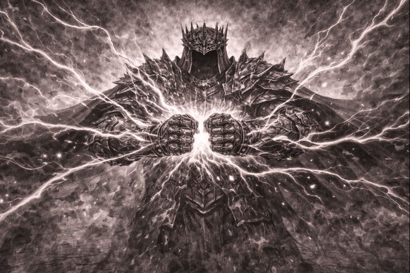
Fire, storm, shadow, mind—
they struck in harmony.
Ferron did not fall.
He absorbed.
He redirected.
Endurance became his weapon.
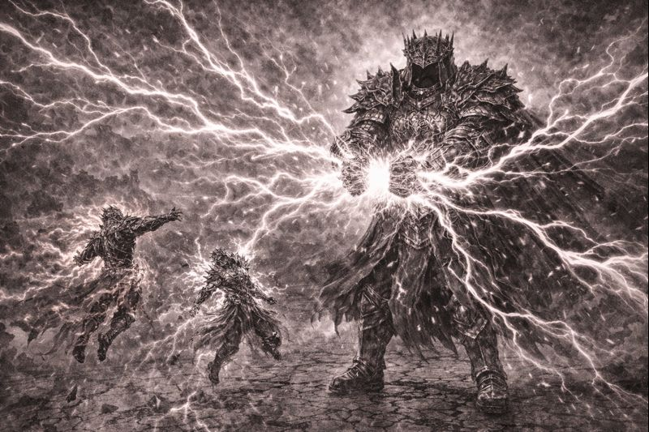
Iron bent.
Not broken—
but stressed.
For the first time,
order showed strain.
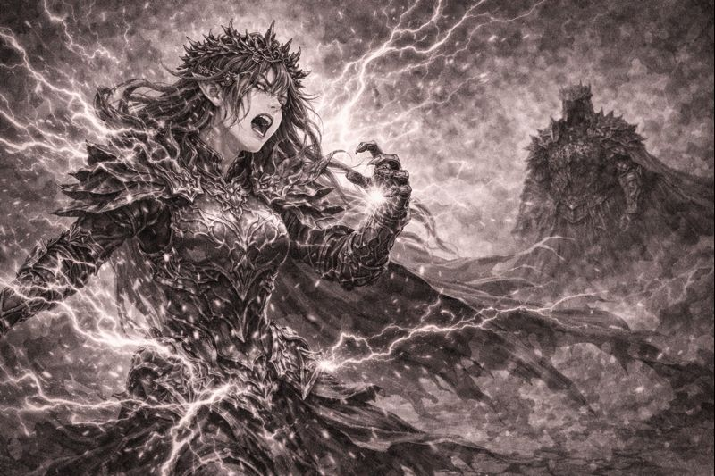
The assault slowed.
Breath returned.
Pain registered.
No victor stood—
only survivors.
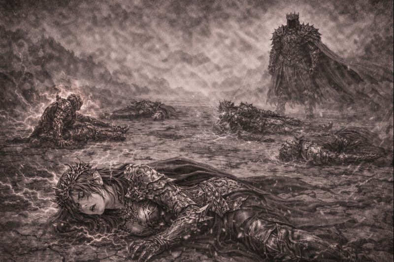
Ferron remained upright.
His armor cracked.
His stance unchanged.
“This is the cost of restraint,” he said.
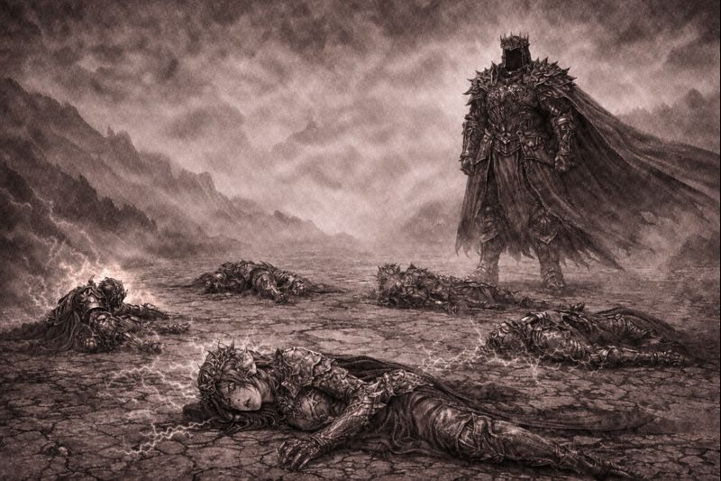
No one answered.
Because all of them felt it.
Something had shifted—
and it was not finished.
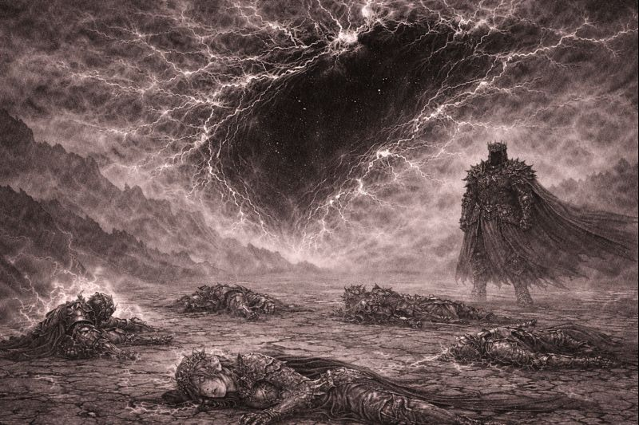
The fracture above the battlefield deepened.
Not tearing—
not widening—
Listening.
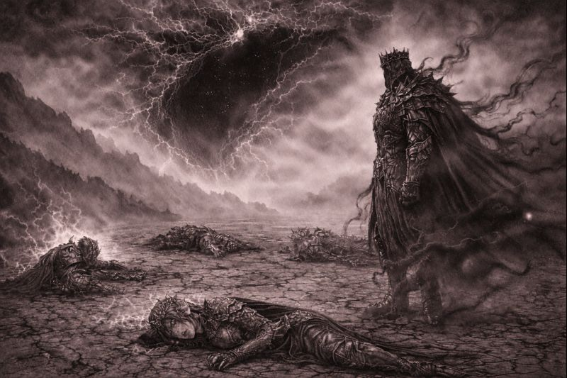
From beyond the Nexus,
something observed the aftermath.
Not with rage.
Not with mercy.
But with interest.
TO BE CONTINUED